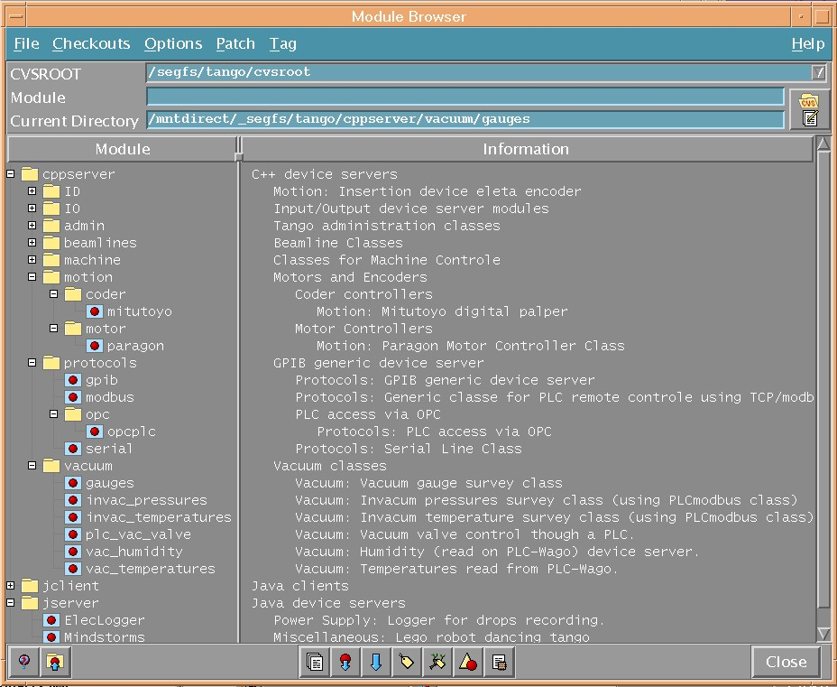

Device Servers List
Automatic Generation Pages
The
TANGO device servers list is automaticly generated by
POGO classes.
These POGO classes scan a CVS repository and check out all
classes under directories named "cppserver" ou "jserver".
Load each class as POGO itself and regenerate the documentation to be up to date.
They analyse the CVSROOT module file to check comments for this class.
If this comments start with a keyword (found in "ModuleFamilies" POGO property),
it sorts the class in an array titled by this keyword.
If no keyword is found, the device server is sorted in a section called Miscellaneous.
The Keywords could be seen in CVS repository browsing as follow:
